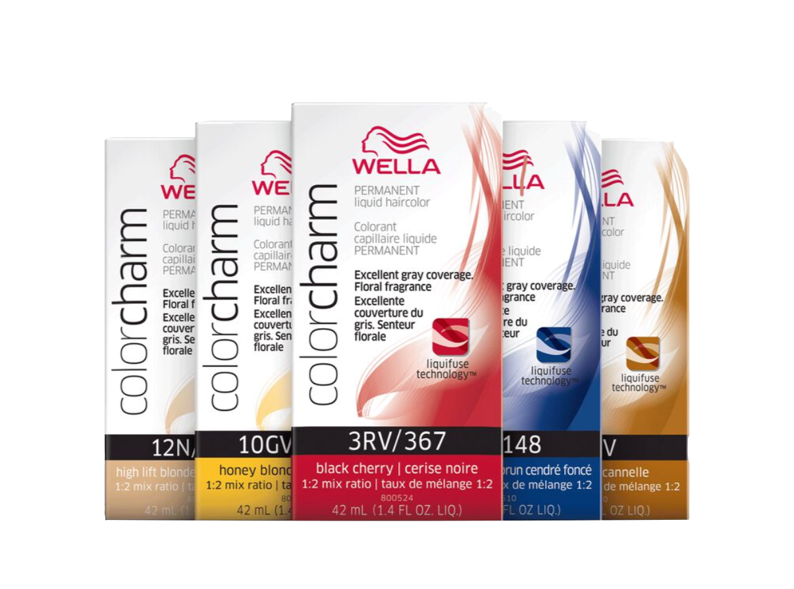
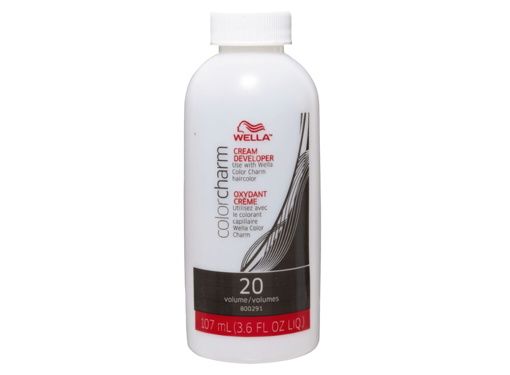

+

Permanent Hair dyes are a valuable option for many. Typically used with a 20 vol developer, this product significantly lifts the cuticle of the hair, lifts the color of the cortex a level and deposits
color on the cortex of the hair. Due to this process, these colors typically last a month or longer.
for more info, see
Mixing Ratios
Decoding Names
Hair Color
home